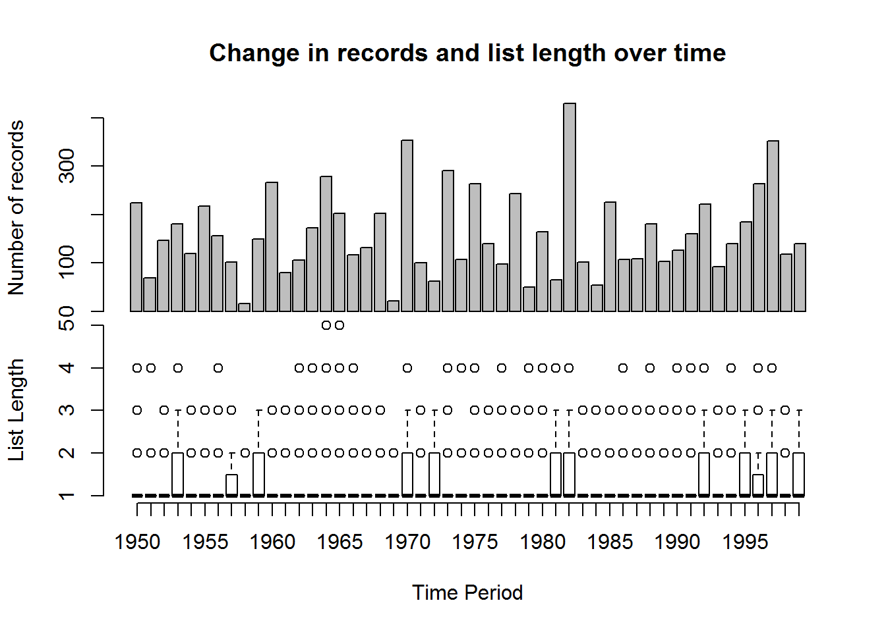
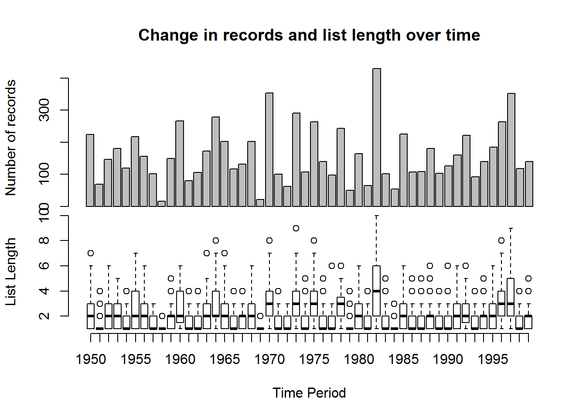
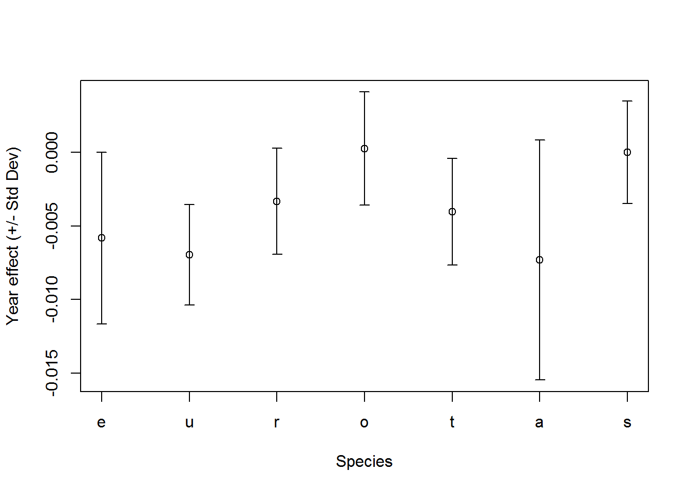
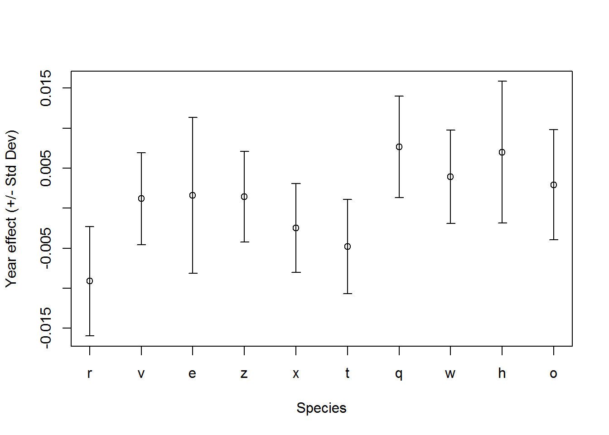
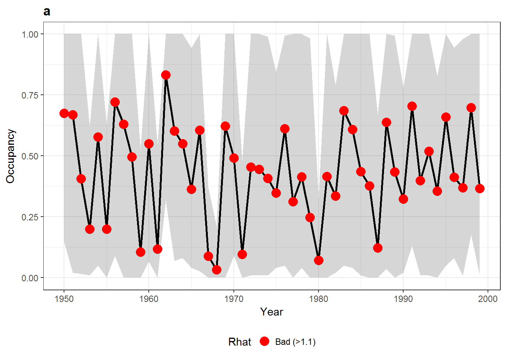
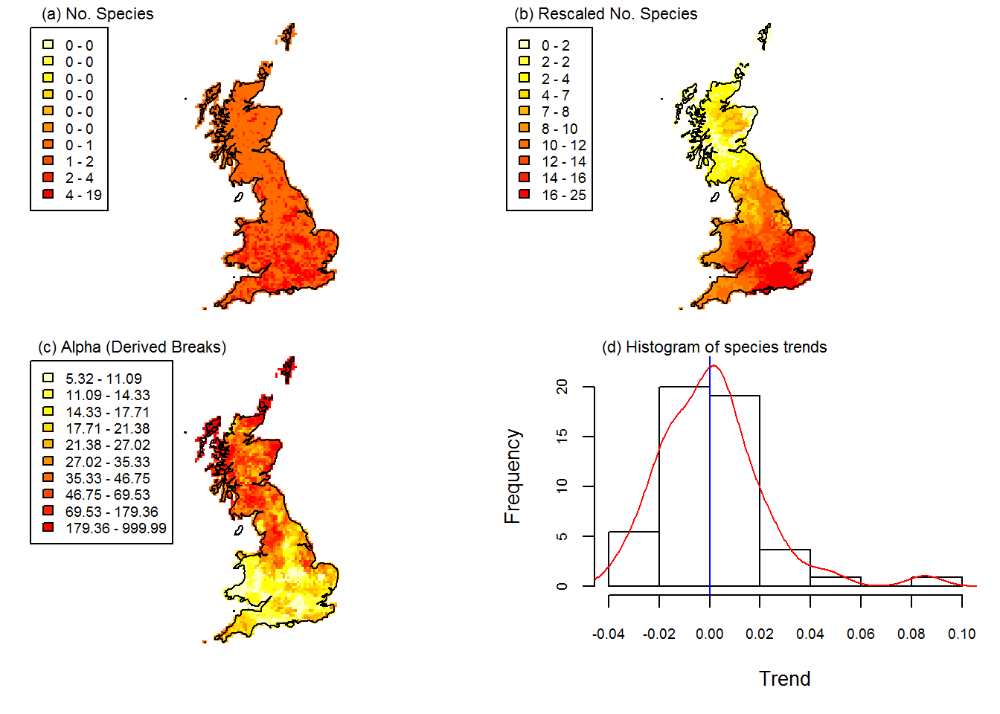

sparta - Species Presence/Absence R Trends Analyses
Tom August
June 2015
Introduction
Sparta provides a range of tools for analysing trends in species occurrence data and is based on the work presented in Isaac et al (2014). The data that is used in these method is ‘what where and when’. The ‘what’ is typically a species name. ‘Where’ is the location of the observation, sometimes referred to as the site. This is typically a 1km, 2km or 10km grid square but could also be a none regular location such as field sites or counties. ‘When’ is the time when an observation is made, and the requirements differ between methods. Some methods require a date while others require you to aggregate dates into time periods for comparison.
All of the methods described here require multi species data. This is because they use information across all species to assess biases.
In this vignette we will run through the methods and show how they can be used in reproducible examples.
Installation
Installing the package is easy and can be done from CRAN. Alternatively the development version can be installed from GitHub.
NOTE: JAGS must be installed before the R package installation will work. JAGS can be found here - http://sourceforge.net/projects/mcmc-jags/files/JAGS/
# Install the package from CRAN
# THIS WILL WORK ONLY AFTER THE PACKAGE IS PUBLISHED
install.packages('sparta')
# Or install the development version from GitHub
library(devtools)
install_github('biologicalrecordscentre/sparta')# Once installed, load the package
library(sparta)## Loading required package: lme4## Loading required package: MatrixThe functions in sparta cover a range of tasks. Primarily they are focused on analysing trends in species occurrence data while accounting for biases (see Isaac et al, 2014). In this vignette we step through these functions and others so that you can understand how the package works. If you have any questions you can find the package maintainers email address using maintainer('sparta'), and if you have issues or bugs you can report them here
Modelling methods
Create some example data
Clearly when you are using sparta you will want to use your own data, however perhaps you are only at the planning stage of your project? This code shows you how to create some example data so that you can try out sparta’s functionality.
# Create data
n <- 8000 # size of dataset
nyr <- 50 # number of years in data
nSamples <- 200 # set number of dates
nSites <- 100 # set number of sites
set.seed(125) # set a random seed
# Create somes dates
first <- as.Date(strptime("1950/01/01", "%Y/%m/%d"))
last <- as.Date(strptime(paste(1950+(nyr-1),"/12/31", sep=''), "%Y/%m/%d"))
dt <- last-first
rDates <- first + (runif(nSamples)*dt)
# taxa are set semi-randomly
taxa_probabilities <- seq(from = 0.1, to = 0.7, length.out = 26)
taxa <- sample(letters, size = n, TRUE, prob = taxa_probabilities)
# sites are visited semi-randomly
site_probabilities <- seq(from = 0.1, to = 0.7, length.out = nSites)
site <- sample(paste('A', 1:nSites, sep=''), size = n, TRUE, prob = site_probabilities)
# the date of visit is selected semi-randomly from those created earlier
time_probabilities <- seq(from = 0.1, to = 0.7, length.out = nSamples)
time_period <- sample(rDates, size = n, TRUE, prob = time_probabilities)
myData <- data.frame(taxa, site, time_period)
# Let's have a look at the my example data
head(myData)## taxa site time_period
## 1 r A51 1970-01-14
## 2 v A87 1980-09-29
## 3 e A56 1996-04-14
## 4 z A28 1959-01-16
## 5 r A77 1970-09-21
## 6 x A48 1990-02-25In general this is the format of data you will need for all of the functions in sparta. The taxa and site columns should be characters and the time_period column should ideally be a date but can in some cases be a numeric.
There are many sources of wildlife observation data including GBIF (Global Biodiversity Information Facility) and the NBN gateway (National Biodiversity Network). Both of these repositories have R packages that will allow you to download this type of data straight into your R session (see rgbif and rnbn for details)
Assessing the quality of data
It can be useful to have a look at your data before you do any analyses. For example it is important to understand the biases in your data. The function dataDiagnostics is designed to help with this.
# Run some data diagnostics on our data
results <- dataDiagnostics(taxa = myData$taxa,
site = myData$site,
time_period = myData$time_period,
progress_bar = FALSE)## Warning in errorChecks(taxa = taxa, site = site, time_period =
## time_period): 94 out of 8000 observations will be removed as duplicates
## ## Linear model outputs ##
##
## There is no detectable change in the number of records over time:
##
## Estimate Std. Error t value Pr(>|t|)
## (Intercept) -894.8997359 1710.0719088 -0.5233112 0.6031654
## time_period 0.5342617 0.8660553 0.6168910 0.5402219
##
##
## There is no detectable change in list lengths over time:
##
## Estimate Std. Error z value Pr(>|z|)
## (Intercept) 2.390402e-01 1.208657e-02 19.7773477 4.665954e-87
## time_period 1.098369e-06 2.135956e-06 0.5142282 6.070924e-01The plot produced shows the number of records for each year in the top plot and the average list length in a box plot at the bottom. List length is the number of taxa observed on a visit to a site, where a visit is taken to be a unique combination of ‘where’ and ‘when’. A trend in the number of observations across time is not uncommon and a formal test for such a trend is performed in the form of a linear model. Trends in the number of records over time are handled by all of the methods presented in sparta in a variety of different ways. Trends in list length are tested in the same manner, and both are returned to the console. A in list length can cause some methods such as the reporting rate methods to fail (see ‘LessEffortPerVisit’ scenario in Isaac et al (2014)) Unsurprisingly, since this is a random dataset, we have no trend in either the number of records or list length over time. This function also works if we have a numeric for time period such as the year
# Run some data diagnostics on our data, now time_period
# is set to be a year
results <- dataDiagnostics(taxa = myData$taxa,
site = myData$site,
time_period = as.numeric(format(myData$time_period, '%Y')),
progress_bar = FALSE)## Warning in errorChecks(taxa = taxa, site = site, time_period =
## time_period): 419 out of 8000 observations will be removed as duplicates
## ## Linear model outputs ##
##
## There is no detectable change in the number of records over time:
##
## Estimate Std. Error t value Pr(>|t|)
## (Intercept) -894.8997359 1710.0719088 -0.5233112 0.6031654
## time_period 0.5342617 0.8660553 0.6168910 0.5402219
##
##
## There is no detectable change in list lengths over time:
##
## Estimate Std. Error z value Pr(>|z|)
## (Intercept) -0.6465523185 1.5554513917 -0.4156686 0.6776525
## time_period 0.0007201245 0.0007874907 0.9144546 0.3604780If we want to view these results in more detail we can interrogate the object results
# See what is in results..
names(results)## [1] "RecordsPerYear" "VisitListLength" "modelRecs" "modelList"# Let's have a look at the details
head(results$RecordsPerYear)## RecordsPerYear
## 1950 1951 1952 1953 1954 1955
## 224 69 147 181 119 218head(results$VisitListLength)## time_period site listLength
## 1 1950 A100 3
## 2 1950 A11 1
## 3 1950 A12 2
## 4 1950 A13 1
## 5 1950 A15 1
## 6 1950 A16 2summary(results$modelRecs)##
## Call:
## glm(formula = count ~ time_period, data = mData)
##
## Deviance Residuals:
## Min 1Q Median 3Q Max
## -136.06 -59.03 -22.40 50.51 265.99
##
## Coefficients:
## Estimate Std. Error t value Pr(>|t|)
## (Intercept) -894.8997 1710.0719 -0.523 0.603
## time_period 0.5343 0.8661 0.617 0.540
##
## (Dispersion parameter for gaussian family taken to be 7809.915)
##
## Null deviance: 377848 on 49 degrees of freedom
## Residual deviance: 374876 on 48 degrees of freedom
## AIC: 594.01
##
## Number of Fisher Scoring iterations: 2summary(results$modelList)##
## Call:
## glm(formula = listLength ~ time_period, family = "poisson", data = space_time)
##
## Deviance Residuals:
## Min 1Q Median 3Q Max
## -0.9132 -0.8866 -0.1309 0.5260 3.8475
##
## Coefficients:
## Estimate Std. Error z value Pr(>|z|)
## (Intercept) -0.6465523 1.5554514 -0.416 0.678
## time_period 0.0007201 0.0007875 0.914 0.360
##
## (Dispersion parameter for poisson family taken to be 1)
##
## Null deviance: 2737.1 on 3489 degrees of freedom
## Residual deviance: 2736.3 on 3488 degrees of freedom
## AIC: 11607
##
## Number of Fisher Scoring iterations: 5Telfer
Telfer’s change index is designed to assess the relative change in range size of species between two time periods (Telfer et al, 2002). This is a simple method that is robust but has low power to detect trends where they exist. While this method is designed to compare two time period sparta can take many time periods and will complete all pairwise comparisons.
Our data is not quite in the correct format for Telfer since it is used to compare time periods but our time_period column is a date. We can fix this by using the date2timeperiod function.
## Create a new column for the time period
# First define my time periods
time_periods <- data.frame(start = c(1950, 1960, 1970, 1980, 1990),
end = c(1959, 1969, 1979, 1989, 1999))
time_periods## start end
## 1 1950 1959
## 2 1960 1969
## 3 1970 1979
## 4 1980 1989
## 5 1990 1999# Now use these to assign my dates to time periods
myData$tp <- date2timeperiod(myData$time_period, time_periods)
head(myData)## taxa site time_period tp
## 1 r A51 1970-01-14 3
## 2 v A87 1980-09-29 4
## 3 e A56 1996-04-14 5
## 4 z A28 1959-01-16 1
## 5 r A77 1970-09-21 3
## 6 x A48 1990-02-25 5As you can see our new column indicates which time period each date falls into with 1 being the earliest time period, 2 being the second and so on. This function will also work if instead of a single date for each record you have a date range
## Create a dataset where we have date ranges
Date_range <- data.frame(startdate = myData$time_period,
enddate = (myData$time_period + 600))
head(Date_range)## startdate enddate
## 1 1970-01-14 1971-09-06
## 2 1980-09-29 1982-05-22
## 3 1996-04-14 1997-12-05
## 4 1959-01-16 1960-09-07
## 5 1970-09-21 1972-05-13
## 6 1990-02-25 1991-10-18# Now assign my date ranges to time periods
Date_range$time_period <- date2timeperiod(Date_range, time_periods)
head(Date_range)## startdate enddate time_period
## 1 1970-01-14 1971-09-06 3
## 2 1980-09-29 1982-05-22 4
## 3 1996-04-14 1997-12-05 5
## 4 1959-01-16 1960-09-07 NA
## 5 1970-09-21 1972-05-13 3
## 6 1990-02-25 1991-10-18 5As you can see in this example when a date range spans the boundaries of your time periods NA is returned.
Now we have our data in the right format we can use the telfer function to analyse the data. The Telfer index for each species is the standardized residual from a linear regression across all species and is a measure of relative change only as the average real trend across species is obscured (Isaac et al (2014); Telfer et al, 2002).Telfer is used for comparing two time periods and if you have more than this the telfer function will all pair-wise comparisons.
# Here is our data
head(myData)## taxa site time_period tp
## 1 r A51 1970-01-14 3
## 2 v A87 1980-09-29 4
## 3 e A56 1996-04-14 5
## 4 z A28 1959-01-16 1
## 5 r A77 1970-09-21 3
## 6 x A48 1990-02-25 5telfer_results <- telfer(taxa = myData$taxa,
site = myData$site,
time_period = myData$tp,
minSite = 2)## Warning in errorChecks(taxa = taxa, site = site, time_period =
## time_period, : 2541 out of 8000 observations will be removed as duplicates## Warning in merge.data.frame(a, b, all = TRUE, by = "taxa"): column names
## 'Nsite_1.x', 'Nsite_1.y' are duplicated in the result
## Warning in merge.data.frame(a, b, all = TRUE, by = "taxa"): column names
## 'Nsite_1.x', 'Nsite_1.y' are duplicated in the result
## Warning in merge.data.frame(a, b, all = TRUE, by = "taxa"): column names
## 'Nsite_1.x', 'Nsite_1.y' are duplicated in the result## Warning in merge.data.frame(a, b, all = TRUE, by = "taxa"): column names
## 'Nsite_1.x', 'Nsite_1.y', 'Nsite_2.x', 'Nsite_2.y' are duplicated in the
## result
## Warning in merge.data.frame(a, b, all = TRUE, by = "taxa"): column names
## 'Nsite_1.x', 'Nsite_1.y', 'Nsite_2.x', 'Nsite_2.y' are duplicated in the
## result## Warning in merge.data.frame(a, b, all = TRUE, by = "taxa"): column
## names 'Nsite_1.x', 'Nsite_1.y', 'Nsite_2.x', 'Nsite_2.y', 'Nsite_3.x',
## 'Nsite_3.y' are duplicated in the result## Warning in merge.data.frame(a, b, all = TRUE, by = "taxa"): column
## names 'Nsite_1.x', 'Nsite_1.y', 'Nsite_2.x', 'Nsite_2.y', 'Nsite_3.x',
## 'Nsite_4.x', 'Nsite_3.y', 'Nsite_5.x', 'Nsite_4.y', 'Nsite_5.y' are
## duplicated in the resultWe get a warning message indicating that a large number of rows are being removed as duplicates. This occurs since we are now aggregating records into time periods and therefore creating a large number of duplicates.
The results give the change index for each species (rows) in each of the pairwise comparisons of time periods (columns).
head(telfer_results)## taxa Nsite_1.x Nsite_2.x Telfer_1_2 Nsite_1.y Nsite_3.x Telfer_1_3
## 1 a 13 16 -0.67842545 13 13 -1.744577671
## 2 b 18 19 -0.90368128 18 21 -0.841219630
## 3 c 16 22 0.96096754 16 22 -0.008737329
## 4 d 17 23 0.79744179 17 21 -0.558165922
## 5 e 23 27 -0.01856808 23 32 0.490523483
## 6 f 28 28 -0.80201507 28 33 -0.412461197
## Nsite_1.x Nsite_4.x Telfer_1_4 Nsite_1.y Nsite_5.x Telfer_1_5 Nsite_2.y
## 1 13 8 -1.8073843 13 17 -0.7000801 17
## 2 18 16 -0.8697828 18 18 -1.5449132 20
## 3 16 19 0.2181534 16 23 0.3726534 22
## 4 17 21 0.3848417 17 30 1.6642357 23
## 5 23 20 -1.0901348 23 21 -1.6500473 27
## 6 28 25 -1.0846426 28 38 0.3817399 29
## Nsite_3.y Telfer_2_3 Nsite_2.x Nsite_4.y Telfer_2_4 Nsite_2.y Nsite_5.y
## 1 13 -1.8352888 17 8 -2.1097232 17 17
## 2 21 -0.5139840 20 16 -0.6234749 20 18
## 3 22 -0.7254485 22 19 -0.3891040 22 23
## 4 21 -1.1759409 23 21 -0.1875890 23 30
## 5 32 0.3450083 27 20 -1.1254544 27 21
## 6 33 0.1657078 29 25 -0.5122655 29 38
## Telfer_2_5 Nsite_3.x Nsite_4.x Telfer_3_4 Nsite_3.y Nsite_5.x Telfer_3_5
## 1 -0.4557972 13 8 -1.1728237 13 17 0.8437536
## 2 -0.8326960 21 16 -0.3171487 21 18 -1.1756988
## 3 -0.3595835 22 19 0.3549603 22 23 -0.2184517
## 4 0.5294236 21 21 1.2663488 21 30 1.3562488
## 5 -1.7153826 32 20 -1.8881411 32 21 -2.1972910
## 6 0.8827473 33 25 -0.8383498 33 38 0.4662370
## Nsite_4.y Nsite_5.y Telfer_4_5
## 1 8 17 1.4880569
## 2 16 18 -0.8995878
## 3 19 23 -0.3834038
## 4 21 30 0.6466352
## 5 20 21 -1.0810351
## 6 25 38 1.3111555Reporting Rate Models
The reporting rates models in sparta are all either GLMs or GLMMs with year as a continuous covariate but are flexible, giving the user a number of options for their analyses. These options include the addition of covariates to account for biases in the data including a random site effect and fixed effect of list length.
In Isaac et al (2014) it was shown that reporting rate models can be susceptible to type 1 errors under certain scenarios and that with site and list length covariates the models performed better when the data were bias. These methods were found to out perform simple methods like Telfer.
The common feature among these models is that the quantity under consideration is the ‘probability of being recorded’. When binomial models are used (as is the default), it’s the ‘probability for an average visit’ for the Bernoulli version it is the probability of being recorded per time period.
Data selection
Before undertaking modelling the data can be subset in an effort to remove data that may introduce bias. Model sub-setting was found to reduce power in Isaac et al (2014) but can partially deal with uneven sampling of site. This process can also be used with other methods and is not solely applicable to the reporting rate models.
The first function allows you to subset your data by list length. This works out, for each combination of ‘where’ and ‘when’ (a visit), the number of species observed (list length). Any records that to not come from a list that meets your list length criteria are then dropped.
# Select only records which occur on lists of length 2 or more
myDataL <- siteSelectionMinL(taxa = myData$taxa,
site = myData$site,
time_period = myData$time_period,
minL = 2) ## Warning in errorChecks(taxa, site, time_period): 94 out of 8000
## observations will be removed as duplicateshead(myDataL)## taxa site time_period
## 1 u A1 1952-11-16
## 2 n A1 1952-11-16
## 3 x A1 1960-06-06
## 4 s A1 1960-06-06
## 5 x A1 1999-08-03
## 6 d A1 1999-08-03# We now have a much smaller dataset after subsetting
nrow(myData)## [1] 8000nrow(myDataL)## [1] 3082We are also able to subset by the number of times a site is sampled. The function siteSelectionMinTP does this. When time_period is a date, as in this case, minTP is minimum number of years a site must be sampled in for it be included in the subset.
# Select only data from sites sampled in at least 10 years
myDataTP <- siteSelectionMinTP(taxa = myData$taxa,
site = myData$site,
time_period = myData$time_period,
minTP = 10) ## Warning in errorChecks(taxa, site, time_period): 94 out of 8000
## observations will be removed as duplicateshead(myDataTP)## taxa site time_period
## 1 r A51 1970-01-14
## 2 v A87 1980-09-29
## 3 e A56 1996-04-14
## 4 z A28 1959-01-16
## 5 r A77 1970-09-21
## 6 x A48 1990-02-25# Here we have only lost a small number rows, this is because
# many sites in our data are visited in a lot of years. Those
# rows that have been removed are duplicates
nrow(myData)## [1] 8000nrow(myDataTP)## [1] 7906As you can see in the above example minTP specifies the number of years a site must be sampled in order to be included. However, our dataset is very well sampled so we might be interested in another measure of time. For example, you might want only sites that have been observed in at least 60 months. Let’s see how this could be done.
# We need to create a new column to represent unique months
# this could also be any unit of time you wanted (week, decade, etc.)
# This line returns a unique character for each month
unique_Months <- format(myData$time_period, "%B_%Y")
head(unique_Months)## [1] "January_1970" "September_1980" "April_1996" "January_1959"
## [5] "September_1970" "February_1990"# Week could be done like this, see ?strptime for more details
unique_Weeks <- format(myData$time_period, "%U_%Y")
head(unique_Weeks)## [1] "02_1970" "39_1980" "15_1996" "02_1959" "38_1970" "08_1990"# Now lets subset to records found on 60 months or more
myData60Months <- siteSelectionMinTP(taxa = myData$taxa,
site = myData$site,
time_period = unique_Months,
minTP = 60) ## Warning in errorChecks(taxa, site, time_period): 129 out of 8000
## observations will be removed as duplicateshead(myData60Months)## taxa site time_period
## 1 r A51 January_1970
## 2 v A87 September_1980
## 3 e A56 April_1996
## 5 r A77 September_1970
## 6 x A48 February_1990
## 7 t A59 January_1981# We could merge this back with our original data if
# we need to retain the full dates
myData60Months <- merge(myData60Months, myData$time_period,
all.x = TRUE, all.y = FALSE,
by = "row.names")
head(myData60Months)## Row.names taxa site time_period y
## 1 1 r A51 January_1970 1970-01-14
## 2 10 w A81 June_1982 1982-06-19
## 3 100 v A91 January_1996 1996-01-29
## 4 1000 h A94 May_1990 1981-01-17
## 5 1001 m A73 March_1999 1990-05-18
## 6 1002 b A59 July_1997 1999-03-05nrow(myData)## [1] 8000nrow(myData60Months)## [1] 5289Following the method in Roy et al (2012) we can combine these two functions to subset both by the length of lists and by the number of years that sites are sampled. This has been wrapped up in to the function siteSelection which takes all the arguments of the previous two functions plus the argument LFirst which indicates whether the data should be subset by list length first (TRUE) or second (FALSE).
# Subset our data as above but in one go
myDataSubset <- siteSelection(taxa = myData$taxa,
site = myData$site,
time_period = myData$time_period,
minL = 2,
minTP = 10,
LFirst = TRUE)## Warning in errorChecks(taxa, site, time_period): 94 out of 8000
## observations will be removed as duplicateshead(myDataSubset)## taxa site time_period
## 11 y A100 1950-01-04
## 12 k A100 1950-01-04
## 13 l A100 1954-01-30
## 14 o A100 1954-01-30
## 15 s A100 1954-01-30
## 16 m A100 1956-02-02nrow(myDataSubset)## [1] 2587Running Reporting Rate Models
Once you have subset your data using the above functions (or perhaps not at all) the reporting rate models can be applied using the function reportingRateModel. This function offers flexibility in the model you wish to fit, allowing the user to specify whether list length and site should be used as covariates, whether over-dispersion should be used, and whether the family should be binomial or Bernoulli. A number of these variants are presented in Isaac et al (2014). While multi-species data is required it is not nessecary to model all species. In fact you can save a significant amount of time by only modelling hte species you are interested in.
# Run the reporting rate model using list length as a fixed effect and
# site as a random effect. Here we only model a few species.
system.time({
RR_out <- reportingRateModel(taxa = myData$taxa,
site = myData$site,
time_period = myData$time_period,
list_length = TRUE,
site_effect = TRUE,
species_to_include = c('e','u','r','o','t','a','s'),
overdispersion = FALSE,
family = 'Bernoulli',
print_progress = TRUE)
})## Warning in errorChecks(taxa = taxa, site = site, time_period =
## time_period, : 94 out of 8000 observations will be removed as duplicates## Modelling e - Species 1 of 7
## Modelling u - Species 2 of 7
## Modelling r - Species 3 of 7
## Modelling o - Species 4 of 7
## Modelling t - Species 5 of 7
## Modelling a - Species 6 of 7
## Modelling s - Species 7 of 7## user system elapsed
## 25.91 0.00 27.97# Let's have a look at the data that is returned
str(RR_out)## 'data.frame': 7 obs. of 14 variables:
## $ species_name : Factor w/ 7 levels "e","u","r","o",..: 1 2 3 4 5 6 7
## $ intercept.estimate : num -4.53 -3.52 -3.32 -3.63 -3.68 ...
## $ year.estimate : num -0.005811 -0.006944 -0.003321 0.000264 -0.004033 ...
## $ listlength.estimate: num 0.574 0.702 0.472 0.572 0.717 ...
## $ intercept.stderror : num 0.185 0.113 0.123 0.129 0.116 ...
## $ year.stderror : num 0.00583 0.00342 0.00359 0.00384 0.00361 ...
## $ listlength.stderror: num 0.1092 0.0659 0.0754 0.0759 0.0683 ...
## $ intercept.zvalue : num -24.5 -31.3 -27.1 -28.2 -31.6 ...
## $ year.zvalue : num -0.9961 -2.0324 -0.9244 0.0688 -1.1177 ...
## $ listlength.zvalue : num 5.25 10.65 6.26 7.54 10.49 ...
## $ intercept.pvalue : num 2.30e-132 1.55e-214 6.09e-162 1.07e-174 3.77e-219 ...
## $ year.pvalue : num 0.3192 0.0421 0.3553 0.9452 0.2637 ...
## $ listlength.pvalue : num 1.51e-07 1.67e-26 3.76e-10 4.78e-14 9.57e-26 ...
## $ observations : num 144 450 398 346 398 73 426
## - attr(*, "intercept_year")= num 1974
## - attr(*, "min_year")= num -24.5
## - attr(*, "max_year")= num 24.5
## - attr(*, "nVisits")= int 6211
## - attr(*, "model_formula")= chr "taxa ~ year + listLength + (1|site)"# We could plot these to see the species trends
with(RR_out,
# Plot graph
{plot(x = 1:7, y = year.estimate,
ylim = range(c(year.estimate - year.stderror,
year.estimate + year.stderror)),
ylab = 'Year effect (+/- Std Dev)',
xlab = 'Species',
xaxt = "n")
# Add x-axis with species names
axis(1, at = 1:7, labels = species_name)
# Add the error bars
arrows(1:7, year.estimate - year.stderror,
1:7, year.estimate + year.stderror,
length = 0.05, angle = 90, code = 3)}
)
The returned object is a data frame with one row per species. Each column gives information on an element of the model output including covariate estimates, standard errors and p-values. This object also has some attributes giving the year that was chosen as the intercept, the number of visits in the dataset and the model formula used.
These models can take a long time to run when your data set is larg or you have a large number of species to model. To make this faster it is possible to parallelise this process across species which can significantly improve your run times. Here is an example of how we would parallelise the above example using hte R package snowfall.
# Load in snowfall
library(snowfall)## Loading required package: snow# I have 4 cpus on my PC so I set cpus to 4
# when I initialise the cluster
sfInit(parallel = TRUE, cpus = 4)## R Version: R version 3.4.1 (2017-06-30)## snowfall 1.84-6.1 initialized (using snow 0.4-2): parallel execution on 4 CPUs.# Export my data to the cluster
sfExport('myData')
# I create a function that takes a species name and runs my models
RR_mod_function <- function(taxa_name){
library(sparta)
RR_out <- reportingRateModel(species_to_include = taxa_name,
taxa = myData$taxa,
site = myData$site,
time_period = myData$time_period,
list_length = TRUE,
site_effect = TRUE,
overdispersion = FALSE,
family = 'Bernoulli',
print_progress = FALSE)
}
# I then run this in parallel
system.time({
para_out <- sfClusterApplyLB(c('e','u','r','o','t','a','s'), RR_mod_function)
})## user system elapsed
## 0.00 0.00 15.43# Name each element of this output by the species
RR_out_combined <- do.call(rbind, para_out)
# Stop the cluster
sfStop()##
## Stopping cluster# You'll see the output is the same as when we did it serially but the
# time taken is shorter. Using a cluster computer with many more than
# 4 cores can greatly reduce run time.
str(RR_out_combined)## 'data.frame': 7 obs. of 14 variables:
## $ species_name : Factor w/ 7 levels "e","u","r","o",..: 1 2 3 4 5 6 7
## $ intercept.estimate : num -4.53 -3.52 -3.32 -3.63 -3.68 ...
## $ year.estimate : num -0.005811 -0.006944 -0.003321 0.000264 -0.004033 ...
## $ listlength.estimate: num 0.574 0.702 0.472 0.572 0.717 ...
## $ intercept.stderror : num 0.185 0.113 0.123 0.129 0.116 ...
## $ year.stderror : num 0.00583 0.00342 0.00359 0.00384 0.00361 ...
## $ listlength.stderror: num 0.1092 0.0659 0.0754 0.0759 0.0683 ...
## $ intercept.zvalue : num -24.5 -31.3 -27.1 -28.2 -31.6 ...
## $ year.zvalue : num -0.9961 -2.0324 -0.9244 0.0688 -1.1177 ...
## $ listlength.zvalue : num 5.25 10.65 6.26 7.54 10.49 ...
## $ intercept.pvalue : num 2.30e-132 1.55e-214 6.09e-162 1.07e-174 3.77e-219 ...
## $ year.pvalue : num 0.3192 0.0421 0.3553 0.9452 0.2637 ...
## $ listlength.pvalue : num 1.51e-07 1.67e-26 3.76e-10 4.78e-14 9.57e-26 ...
## $ observations : num 144 450 398 346 398 73 426
## - attr(*, "intercept_year")= num 1974
## - attr(*, "min_year")= num -24.5
## - attr(*, "max_year")= num 24.5
## - attr(*, "nVisits")= int 6211
## - attr(*, "model_formula")= chr "taxa ~ year + listLength + (1|site)"Using these functions it is possible to recreate the ‘Well-sampled sites’ method that is presented in Roy et al (2012) and Thomas et al (2015). This is made available in the function WSS which is a simple wrapper around siteSelection and reportingratemodel. In this variant the data is subset by list length and the number of years each site was sampled before being run in a GLMM with site as a random effect.
# Run our data through the well-sampled sites function
# This time we run all species
WSS_out <- WSS(taxa = myData$taxa,
site = myData$site,
time_period = myData$time_period,
minL = 2,
minTP = 10,
print_progress = FALSE)## Warning in errorChecks(taxa, site, time_period): 94 out of 8000
## observations will be removed as duplicates# The data is returned in the same format as from reportingRateModel
str(WSS_out)## 'data.frame': 26 obs. of 10 variables:
## $ species_name : Factor w/ 26 levels "r","v","e","z",..: 1 2 3 4 5 6 7 8 9 10 ...
## $ intercept.estimate: num -2.29 -1.85 -3.17 -1.81 -1.75 ...
## $ year.estimate : num -0.00912 0.0012 0.00158 0.00143 -0.00247 ...
## $ intercept.stderror: num 0.1021 0.0861 0.1875 0.0848 0.0829 ...
## $ year.stderror : num 0.00684 0.00574 0.00973 0.00565 0.00554 ...
## $ intercept.zvalue : num -22.4 -21.5 -16.9 -21.3 -21.1 ...
## $ year.zvalue : num -1.334 0.208 0.163 0.253 -0.446 ...
## $ intercept.pvalue : num 1.70e-111 1.66e-102 6.54e-64 6.87e-101 1.06e-98 ...
## $ year.pvalue : num 0.182 0.835 0.871 0.8 0.656 ...
## $ observations : num 106 157 50 163 171 148 125 155 61 104 ...
## - attr(*, "intercept_year")= num 1974
## - attr(*, "min_year")= num -24.5
## - attr(*, "max_year")= num 24.5
## - attr(*, "nVisits")= int 1155
## - attr(*, "model_formula")= chr "cbind(successes, failures) ~ year + (1|site)"
## - attr(*, "minL")= num 2
## - attr(*, "minTP")= num 10# We can plot these and see that we get different results to our
# previous analysis since this time the method includes subsetting
with(WSS_out[1:10,],
# Plot graph
{plot(x = 1:10, y = year.estimate,
ylim = range(c(year.estimate - year.stderror,
year.estimate + year.stderror)),
ylab = 'Year effect (+/- Std Dev)',
xlab = 'Species',
xaxt="n")
# Add x-axis with species names
axis(1, at=1:10, labels = species_name[1:10])
# Add the error bars
arrows(1:10, year.estimate - year.stderror,
1:10, year.estimate + year.stderror,
length=0.05, angle=90, code=3)}
)
Occupancy models
Occupancy models were found by Isaac et al (2014) to be one of the best tools for analysing species occurrence data typical of citizen science projects, being both robust and powerful. This method models the occupancy process separately from the detection process, but we will not go in to the details of the model here since there is a growing literature about occupancy models, how and when they should be used. Here we focus on how the occupancy model discussed in Isaac et al 2014 is implemented in sparta.
This function works in a very similar fashion to that of the previous functions we have discussed. The data it takes is ‘What, where, when’ as in other functions, however here we have the option to specify which species we wish to model. This feature has been added as occupancy models are computationally intensive. The parameters of the function allow you control over the number of iterations, burnin, thinning, the number of chains, the seed and for advanced users there is also the possibility to pass in your own BUGS script.
# Here is our data
str(myData)## 'data.frame': 8000 obs. of 4 variables:
## $ taxa : Factor w/ 26 levels "a","b","c","d",..: 18 22 5 26 18 24 20 24 17 23 ...
## $ site : Factor w/ 100 levels "A1","A10","A100",..: 48 87 53 22 76 44 56 66 92 81 ...
## $ time_period: Date, format: "1970-01-14" "1980-09-29" ...
## $ tp : int 3 4 5 1 3 5 4 1 5 4 ...# Run an occupancy model for three species
# Here we use very small number of iterations
# to avoid a long run time
system.time({
occ_out <- occDetModel(taxa = myData$taxa,
site = myData$site,
time_period = myData$time_period,
species_list = c('a','b','c','d'),
write_results = FALSE,
n_iterations = 200,
burnin = 15,
n_chains = 3,
thinning = 3,
seed = 123)
})## Warning in errorChecks(taxa = taxa, site = site, time_period =
## time_period): 94 out of 8000 observations will be removed as duplicates##
## ###
## Modeling a - 1 of 4 taxa
## #### PLEASE REVIEW THE BELOW ####
##
## Your model settings: sparta, contlistlength
##
## Model File:
##
## model{
## #######################################
## # SPARTA model from GitHub 26/05/2016 #
##
## # State model
## for (i in 1:nsite){
## for (t in 1:nyear){
## z[i,t] ~ dbern(muZ[i,t])
## logit(muZ[i,t])<- a[t] + eta[i]
## }}
##
## # Priors
## # State model priors
## for(t in 1:nyear){
## a[t] ~ dunif(-10,10)
## }
##
## # RANDOM EFFECT for SITE
## for (i in 1:nsite) {
## eta[i] ~ dnorm(0, tau2)
## }
##
## tau2 <- 1/(sigma2 * sigma2)
## sigma2 ~ dunif(0, 5)
##
##
## # Observation model priors
## for (t in 1:nyear) {
## alpha.p[t] ~ dnorm(mu.lp, tau.lp)
## }
##
## mu.lp ~ dnorm(0, 0.01)
## tau.lp <- 1 / (sd.lp * sd.lp)
## sd.lp ~ dunif(0, 5)
##
## # Derived parameters state model
##
## # Finite sample occupancy
## for (t in 1:nyear) {
## psi.fs[t] <- sum(z[1:nsite,t])/nsite
## } LL.p ~ dunif(dtype2p_min, dtype2p_max)
## ### Observation Model
## for(j in 1:nvisit) {
## y[j] ~ dbern(Py[j])
## Py[j]<- z[Site[j],Year[j]]*p[j]
## logit(p[j]) <- alpha.p[Year[j]] + LL.p*logL[j]
## } }
##
## bugs_data:
##
## List of 9
## $ y : num [1:6211] 0 0 0 0 0 0 0 0 0 0 ...
## $ Year : num [1:6211] 3 7 10 11 12 12 13 14 16 19 ...
## $ Site : int [1:6211] 1 1 1 1 1 1 1 1 1 1 ...
## $ nyear : num 50
## $ nsite : int 100
## $ nvisit : int 6211
## $ logL : num [1:6211] 0.693 0 0 0.693 0 ...
## $ dtype2p_min: num -10
## $ dtype2p_max: num 10
##
##
## init.vals:
##
## List of 3
## $ :List of 5
## ..$ z : num [1:100, 1:50] 0 0 1 0 0 0 0 0 0 0 ...
## .. ..- attr(*, "dimnames")=List of 2
## .. .. ..$ : chr [1:100] "1" "2" "3" "4" ...
## .. .. ..$ : chr [1:50] "1" "2" "3" "4" ...
## ..$ alpha.p: num [1:50] -0.85 -0.85 -0.85 -0.85 -0.85 ...
## ..$ a : num [1:50] 1.15 1.15 1.15 1.15 1.15 ...
## ..$ eta : num [1:100] -0.364 -0.364 -0.364 -0.364 -0.364 ...
## ..$ LL.p : num 1.53
## $ :List of 5
## ..$ z : num [1:100, 1:50] 0 0 1 0 0 0 0 0 0 0 ...
## .. ..- attr(*, "dimnames")=List of 2
## .. .. ..$ : chr [1:100] "1" "2" "3" "4" ...
## .. .. ..$ : chr [1:50] "1" "2" "3" "4" ...
## ..$ alpha.p: num [1:50] 1.76 1.76 1.76 1.76 1.76 ...
## ..$ a : num [1:50] -1.82 -1.82 -1.82 -1.82 -1.82 ...
## ..$ eta : num [1:100] 0.112 0.112 0.112 0.112 0.112 ...
## ..$ LL.p : num 1.57
## $ :List of 5
## ..$ z : num [1:100, 1:50] 0 0 1 0 0 0 0 0 0 0 ...
## .. ..- attr(*, "dimnames")=List of 2
## .. .. ..$ : chr [1:100] "1" "2" "3" "4" ...
## .. .. ..$ : chr [1:50] "1" "2" "3" "4" ...
## ..$ alpha.p: num [1:50] 0.206 0.206 0.206 0.206 0.206 ...
## ..$ a : num [1:50] -0.174 -0.174 -0.174 -0.174 -0.174 ...
## ..$ eta : num [1:100] 1.83 1.83 1.83 1.83 1.83 ...
## ..$ LL.p : num -0.187
##
##
## parameters:
##
## psi.fs tau2 tau.lp alpha.p a mu.lp LL.p## module glm loaded## Compiling model graph
## Resolving undeclared variables
## Allocating nodes
## Graph information:
## Observed stochastic nodes: 6211
## Unobserved stochastic nodes: 5204
## Total graph size: 45069
##
## Initializing model
##
##
## ###
## Modeling b - 2 of 4 taxa
## #### PLEASE REVIEW THE BELOW ####
##
## Your model settings: sparta, contlistlength
##
## Model File:
##
## model{
## #######################################
## # SPARTA model from GitHub 26/05/2016 #
##
## # State model
## for (i in 1:nsite){
## for (t in 1:nyear){
## z[i,t] ~ dbern(muZ[i,t])
## logit(muZ[i,t])<- a[t] + eta[i]
## }}
##
## # Priors
## # State model priors
## for(t in 1:nyear){
## a[t] ~ dunif(-10,10)
## }
##
## # RANDOM EFFECT for SITE
## for (i in 1:nsite) {
## eta[i] ~ dnorm(0, tau2)
## }
##
## tau2 <- 1/(sigma2 * sigma2)
## sigma2 ~ dunif(0, 5)
##
##
## # Observation model priors
## for (t in 1:nyear) {
## alpha.p[t] ~ dnorm(mu.lp, tau.lp)
## }
##
## mu.lp ~ dnorm(0, 0.01)
## tau.lp <- 1 / (sd.lp * sd.lp)
## sd.lp ~ dunif(0, 5)
##
## # Derived parameters state model
##
## # Finite sample occupancy
## for (t in 1:nyear) {
## psi.fs[t] <- sum(z[1:nsite,t])/nsite
## } LL.p ~ dunif(dtype2p_min, dtype2p_max)
## ### Observation Model
## for(j in 1:nvisit) {
## y[j] ~ dbern(Py[j])
## Py[j]<- z[Site[j],Year[j]]*p[j]
## logit(p[j]) <- alpha.p[Year[j]] + LL.p*logL[j]
## } }
##
## bugs_data:
##
## List of 9
## $ y : num [1:6211] 0 0 0 0 0 0 0 0 0 0 ...
## $ Year : num [1:6211] 3 7 10 11 12 12 13 14 16 19 ...
## $ Site : int [1:6211] 1 1 1 1 1 1 1 1 1 1 ...
## $ nyear : num 50
## $ nsite : int 100
## $ nvisit : int 6211
## $ logL : num [1:6211] 0.693 0 0 0.693 0 ...
## $ dtype2p_min: num -10
## $ dtype2p_max: num 10
##
##
## init.vals:
##
## List of 3
## $ :List of 5
## ..$ z : num [1:100, 1:50] 0 0 0 0 0 0 0 0 0 0 ...
## .. ..- attr(*, "dimnames")=List of 2
## .. .. ..$ : chr [1:100] "1" "2" "3" "4" ...
## .. .. ..$ : chr [1:50] "1" "2" "3" "4" ...
## ..$ alpha.p: num [1:50] -0.85 -0.85 -0.85 -0.85 -0.85 ...
## ..$ a : num [1:50] 1.15 1.15 1.15 1.15 1.15 ...
## ..$ eta : num [1:100] -0.364 -0.364 -0.364 -0.364 -0.364 ...
## ..$ LL.p : num 1.53
## $ :List of 5
## ..$ z : num [1:100, 1:50] 0 0 0 0 0 0 0 0 0 0 ...
## .. ..- attr(*, "dimnames")=List of 2
## .. .. ..$ : chr [1:100] "1" "2" "3" "4" ...
## .. .. ..$ : chr [1:50] "1" "2" "3" "4" ...
## ..$ alpha.p: num [1:50] 1.76 1.76 1.76 1.76 1.76 ...
## ..$ a : num [1:50] -1.82 -1.82 -1.82 -1.82 -1.82 ...
## ..$ eta : num [1:100] 0.112 0.112 0.112 0.112 0.112 ...
## ..$ LL.p : num 1.57
## $ :List of 5
## ..$ z : num [1:100, 1:50] 0 0 0 0 0 0 0 0 0 0 ...
## .. ..- attr(*, "dimnames")=List of 2
## .. .. ..$ : chr [1:100] "1" "2" "3" "4" ...
## .. .. ..$ : chr [1:50] "1" "2" "3" "4" ...
## ..$ alpha.p: num [1:50] 0.206 0.206 0.206 0.206 0.206 ...
## ..$ a : num [1:50] -0.174 -0.174 -0.174 -0.174 -0.174 ...
## ..$ eta : num [1:100] 1.83 1.83 1.83 1.83 1.83 ...
## ..$ LL.p : num -0.187
##
##
## parameters:
##
## psi.fs tau2 tau.lp alpha.p a mu.lp LL.pCompiling model graph
## Resolving undeclared variables
## Allocating nodes
## Graph information:
## Observed stochastic nodes: 6211
## Unobserved stochastic nodes: 5204
## Total graph size: 45069
##
## Initializing model
##
##
## ###
## Modeling c - 3 of 4 taxa
## #### PLEASE REVIEW THE BELOW ####
##
## Your model settings: sparta, contlistlength
##
## Model File:
##
## model{
## #######################################
## # SPARTA model from GitHub 26/05/2016 #
##
## # State model
## for (i in 1:nsite){
## for (t in 1:nyear){
## z[i,t] ~ dbern(muZ[i,t])
## logit(muZ[i,t])<- a[t] + eta[i]
## }}
##
## # Priors
## # State model priors
## for(t in 1:nyear){
## a[t] ~ dunif(-10,10)
## }
##
## # RANDOM EFFECT for SITE
## for (i in 1:nsite) {
## eta[i] ~ dnorm(0, tau2)
## }
##
## tau2 <- 1/(sigma2 * sigma2)
## sigma2 ~ dunif(0, 5)
##
##
## # Observation model priors
## for (t in 1:nyear) {
## alpha.p[t] ~ dnorm(mu.lp, tau.lp)
## }
##
## mu.lp ~ dnorm(0, 0.01)
## tau.lp <- 1 / (sd.lp * sd.lp)
## sd.lp ~ dunif(0, 5)
##
## # Derived parameters state model
##
## # Finite sample occupancy
## for (t in 1:nyear) {
## psi.fs[t] <- sum(z[1:nsite,t])/nsite
## } LL.p ~ dunif(dtype2p_min, dtype2p_max)
## ### Observation Model
## for(j in 1:nvisit) {
## y[j] ~ dbern(Py[j])
## Py[j]<- z[Site[j],Year[j]]*p[j]
## logit(p[j]) <- alpha.p[Year[j]] + LL.p*logL[j]
## } }
##
## bugs_data:
##
## List of 9
## $ y : num [1:6211] 0 0 0 0 0 0 0 0 0 0 ...
## $ Year : num [1:6211] 3 7 10 11 12 12 13 14 16 19 ...
## $ Site : int [1:6211] 1 1 1 1 1 1 1 1 1 1 ...
## $ nyear : num 50
## $ nsite : int 100
## $ nvisit : int 6211
## $ logL : num [1:6211] 0.693 0 0 0.693 0 ...
## $ dtype2p_min: num -10
## $ dtype2p_max: num 10
##
##
## init.vals:
##
## List of 3
## $ :List of 5
## ..$ z : num [1:100, 1:50] 0 0 0 0 1 0 0 0 0 0 ...
## .. ..- attr(*, "dimnames")=List of 2
## .. .. ..$ : chr [1:100] "1" "2" "3" "4" ...
## .. .. ..$ : chr [1:50] "1" "2" "3" "4" ...
## ..$ alpha.p: num [1:50] -0.85 -0.85 -0.85 -0.85 -0.85 ...
## ..$ a : num [1:50] 1.15 1.15 1.15 1.15 1.15 ...
## ..$ eta : num [1:100] -0.364 -0.364 -0.364 -0.364 -0.364 ...
## ..$ LL.p : num 1.53
## $ :List of 5
## ..$ z : num [1:100, 1:50] 0 0 0 0 1 0 0 0 0 0 ...
## .. ..- attr(*, "dimnames")=List of 2
## .. .. ..$ : chr [1:100] "1" "2" "3" "4" ...
## .. .. ..$ : chr [1:50] "1" "2" "3" "4" ...
## ..$ alpha.p: num [1:50] 1.76 1.76 1.76 1.76 1.76 ...
## ..$ a : num [1:50] -1.82 -1.82 -1.82 -1.82 -1.82 ...
## ..$ eta : num [1:100] 0.112 0.112 0.112 0.112 0.112 ...
## ..$ LL.p : num 1.57
## $ :List of 5
## ..$ z : num [1:100, 1:50] 0 0 0 0 1 0 0 0 0 0 ...
## .. ..- attr(*, "dimnames")=List of 2
## .. .. ..$ : chr [1:100] "1" "2" "3" "4" ...
## .. .. ..$ : chr [1:50] "1" "2" "3" "4" ...
## ..$ alpha.p: num [1:50] 0.206 0.206 0.206 0.206 0.206 ...
## ..$ a : num [1:50] -0.174 -0.174 -0.174 -0.174 -0.174 ...
## ..$ eta : num [1:100] 1.83 1.83 1.83 1.83 1.83 ...
## ..$ LL.p : num -0.187
##
##
## parameters:
##
## psi.fs tau2 tau.lp alpha.p a mu.lp LL.pCompiling model graph
## Resolving undeclared variables
## Allocating nodes
## Graph information:
## Observed stochastic nodes: 6211
## Unobserved stochastic nodes: 5204
## Total graph size: 45069
##
## Initializing model
##
##
## ###
## Modeling d - 4 of 4 taxa
## #### PLEASE REVIEW THE BELOW ####
##
## Your model settings: sparta, contlistlength
##
## Model File:
##
## model{
## #######################################
## # SPARTA model from GitHub 26/05/2016 #
##
## # State model
## for (i in 1:nsite){
## for (t in 1:nyear){
## z[i,t] ~ dbern(muZ[i,t])
## logit(muZ[i,t])<- a[t] + eta[i]
## }}
##
## # Priors
## # State model priors
## for(t in 1:nyear){
## a[t] ~ dunif(-10,10)
## }
##
## # RANDOM EFFECT for SITE
## for (i in 1:nsite) {
## eta[i] ~ dnorm(0, tau2)
## }
##
## tau2 <- 1/(sigma2 * sigma2)
## sigma2 ~ dunif(0, 5)
##
##
## # Observation model priors
## for (t in 1:nyear) {
## alpha.p[t] ~ dnorm(mu.lp, tau.lp)
## }
##
## mu.lp ~ dnorm(0, 0.01)
## tau.lp <- 1 / (sd.lp * sd.lp)
## sd.lp ~ dunif(0, 5)
##
## # Derived parameters state model
##
## # Finite sample occupancy
## for (t in 1:nyear) {
## psi.fs[t] <- sum(z[1:nsite,t])/nsite
## } LL.p ~ dunif(dtype2p_min, dtype2p_max)
## ### Observation Model
## for(j in 1:nvisit) {
## y[j] ~ dbern(Py[j])
## Py[j]<- z[Site[j],Year[j]]*p[j]
## logit(p[j]) <- alpha.p[Year[j]] + LL.p*logL[j]
## } }
##
## bugs_data:
##
## List of 9
## $ y : num [1:6211] 0 0 0 0 0 0 0 0 0 0 ...
## $ Year : num [1:6211] 3 7 10 11 12 12 13 14 16 19 ...
## $ Site : int [1:6211] 1 1 1 1 1 1 1 1 1 1 ...
## $ nyear : num 50
## $ nsite : int 100
## $ nvisit : int 6211
## $ logL : num [1:6211] 0.693 0 0 0.693 0 ...
## $ dtype2p_min: num -10
## $ dtype2p_max: num 10
##
##
## init.vals:
##
## List of 3
## $ :List of 5
## ..$ z : num [1:100, 1:50] 0 0 0 0 0 0 0 0 0 0 ...
## .. ..- attr(*, "dimnames")=List of 2
## .. .. ..$ : chr [1:100] "1" "2" "3" "4" ...
## .. .. ..$ : chr [1:50] "1" "2" "3" "4" ...
## ..$ alpha.p: num [1:50] -0.85 -0.85 -0.85 -0.85 -0.85 ...
## ..$ a : num [1:50] 1.15 1.15 1.15 1.15 1.15 ...
## ..$ eta : num [1:100] -0.364 -0.364 -0.364 -0.364 -0.364 ...
## ..$ LL.p : num 1.53
## $ :List of 5
## ..$ z : num [1:100, 1:50] 0 0 0 0 0 0 0 0 0 0 ...
## .. ..- attr(*, "dimnames")=List of 2
## .. .. ..$ : chr [1:100] "1" "2" "3" "4" ...
## .. .. ..$ : chr [1:50] "1" "2" "3" "4" ...
## ..$ alpha.p: num [1:50] 1.76 1.76 1.76 1.76 1.76 ...
## ..$ a : num [1:50] -1.82 -1.82 -1.82 -1.82 -1.82 ...
## ..$ eta : num [1:100] 0.112 0.112 0.112 0.112 0.112 ...
## ..$ LL.p : num 1.57
## $ :List of 5
## ..$ z : num [1:100, 1:50] 0 0 0 0 0 0 0 0 0 0 ...
## .. ..- attr(*, "dimnames")=List of 2
## .. .. ..$ : chr [1:100] "1" "2" "3" "4" ...
## .. .. ..$ : chr [1:50] "1" "2" "3" "4" ...
## ..$ alpha.p: num [1:50] 0.206 0.206 0.206 0.206 0.206 ...
## ..$ a : num [1:50] -0.174 -0.174 -0.174 -0.174 -0.174 ...
## ..$ eta : num [1:100] 1.83 1.83 1.83 1.83 1.83 ...
## ..$ LL.p : num -0.187
##
##
## parameters:
##
## psi.fs tau2 tau.lp alpha.p a mu.lp LL.pCompiling model graph
## Resolving undeclared variables
## Allocating nodes
## Graph information:
## Observed stochastic nodes: 6211
## Unobserved stochastic nodes: 5204
## Total graph size: 45069
##
## Initializing model## user system elapsed
## 76.23 0.08 85.56# Lets look at the results
## The object returned is a list with one element for each species
names(occ_out)## [1] "a" "b" "c" "d"# Each of these is an object of class 'occDet'
class(occ_out$a)## [1] "occDet"# Inside these elements is the information of interest
names(occ_out$a)## [1] "model" "BUGSoutput" "parameters.to.save"
## [4] "model.file" "n.iter" "DIC"
## [7] "SPP_NAME" "min_year" "max_year"
## [10] "nsites" "nvisits" "species_sites"
## [13] "species_observations"# Of particular interest to many users will be the summary
# data in the BUGSoutput
head(occ_out$a$BUGSoutput$summary)## mean sd 2.5% 25% 50% 75%
## LL.p 0.7427121 0.323516 0.04685566 0.530657 0.7499549 0.9781109
## a[1] 2.4522909 3.692271 -2.55811307 -0.484016 1.2133769 5.3436343
## a[2] 3.0376645 4.332380 -4.77258866 -1.402761 4.2795374 6.6267167
## a[3] -0.6545089 3.033347 -4.55763097 -2.732324 -1.5474491 1.1263473
## a[4] -2.4836398 1.784346 -6.02400397 -3.432000 -2.6641979 -1.3128673
## a[5] 1.5554312 3.547313 -3.26809601 -1.060623 0.5196220 4.1324295
## 97.5% Rhat n.eff
## LL.p 1.3318468 1.055220 37
## a[1] 9.4722309 2.242779 5
## a[2] 9.3896333 3.737906 3
## a[3] 7.7935907 1.800707 6
## a[4] 0.4916744 1.060894 55
## a[5] 9.1627592 1.701485 6# We have included a plotting feature for objects of class
# occDet which provides a useful visualisation of the trend
# in occupancy over time
plot(occ_out$a)
He we have run a small example but in reality these models are usually run for many thousands of iterations, making the analysis of more than a handful of species impractical. For those with access to the necessary facilities it is possible to parallelise across species. To do this we use a pair of functions that are used internally by occDetModel. These are formatOccData which is used to format our occurrence data into the format needed by JAGS, and occDetFunc, the function which undertakes the modelling.
# First format our data
formattedOccData <- formatOccData(taxa = myData$taxa,
site = myData$site,
time_period = myData$time_period)## Warning in errorChecks(taxa = taxa, site = site, time_period =
## time_period): 94 out of 8000 observations will be removed as duplicates# This is a list of two elements
names(formattedOccData)## [1] "spp_vis" "occDetdata"formatOccData returns a list of length 2; the first element ‘spp_vis’ is a data.frame with visit (unique combination of site and time period) in the first column and taxa for all the following columns. Values in taxa columns are either TRUE or FALSE depending on whether they were observed on that visit.
# Lets have a look at spp_vis
head(formattedOccData$spp_vis[,1:5])## visit a b c d
## 1 A1001950-01-04 FALSE FALSE FALSE FALSE
## 2 A1001950-11-01 TRUE FALSE FALSE FALSE
## 3 A1001951-08-25 FALSE FALSE FALSE FALSE
## 4 A1001951-11-03 FALSE FALSE FALSE FALSE
## 5 A1001952-02-07 FALSE FALSE FALSE FALSE
## 6 A1001953-02-22 FALSE FALSE FALSE FALSEThe second element (‘occDetData’) is a data frame giving the site, list length (the number of species observed on a visit) and year for each visit.
# Lets have a look at occDetData
head(formattedOccData$occDetdata)## visit site L year
## 1 A1001950-01-04 A100 2 1950
## 3 A1001950-11-01 A100 1 1950
## 4 A1001951-08-25 A100 1 1951
## 5 A1001951-11-03 A100 1 1951
## 6 A1001952-02-07 A100 1 1952
## 7 A1001953-02-22 A100 1 1953With our data in the correct format this can now go into the modelling function
# Use the occupancy modelling function to parrellise the process
# Here we are going to use the package snowfall
library(snowfall)
# I have 4 cpus on my PC so I set cpus to 4
# when I initialise the cluster
sfInit(parallel = TRUE, cpus = 4)## snowfall 1.84-6.1 initialized (using snow 0.4-2): parallel execution on 4 CPUs.# Export my data to the cluster
sfExport('formattedOccData')
# I create a function that takes a species name and runs my model
occ_mod_function <- function(taxa_name){
library(sparta)
occ_out <- occDetFunc(taxa_name = taxa_name,
n_iterations = 200,
burnin = 15,
occDetdata = formattedOccData$occDetdata,
spp_vis = formattedOccData$spp_vis,
write_results = FALSE,
seed = 123)
}
# I then run this in parallel
system.time({
para_out <- sfClusterApplyLB(c('a','b','c','d'), occ_mod_function)
})## user system elapsed
## 0.01 0.00 40.04# Name each element of this output by the species
for(i in 1:length(para_out)) names(para_out)[i] <- para_out[[i]]$SPP_NAM
# Stop the cluster
sfStop()##
## Stopping cluster# This takes about half the time of the
# serial version we ran earlier, and the resulting object
# is the same (since we set the random seed to be the same
# in each)
head(para_out$a$BUGSoutput$summary)## mean sd 2.5% 25% 50% 75%
## LL.p 0.7427121 0.323516 0.04685566 0.530657 0.7499549 0.9781109
## a[1] 2.4522909 3.692271 -2.55811307 -0.484016 1.2133769 5.3436343
## a[2] 3.0376645 4.332380 -4.77258866 -1.402761 4.2795374 6.6267167
## a[3] -0.6545089 3.033347 -4.55763097 -2.732324 -1.5474491 1.1263473
## a[4] -2.4836398 1.784346 -6.02400397 -3.432000 -2.6641979 -1.3128673
## a[5] 1.5554312 3.547313 -3.26809601 -1.060623 0.5196220 4.1324295
## 97.5% Rhat n.eff
## LL.p 1.3318468 1.055220 37
## a[1] 9.4722309 2.242779 5
## a[2] 9.3896333 3.737906 3
## a[3] 7.7935907 1.800707 6
## a[4] 0.4916744 1.060894 55
## a[5] 9.1627592 1.701485 6plot(para_out$a)
This same approach can be used on cluster computers, which can have hundreds of processors, to dramatically reduce run times.
Frescalo
The frescalo method is outlined in Hill (2012) and is a means to account for both spatial and temporal bias. This method was shown by Isaac et al (2014) to be a good method for data that is aggregated into time periods such as when comparing atlases. The frescalo method is run using a .exe, you will need to download this file by visiting this link - https://github.com/BiologicalRecordsCentre/frescalo. Once you have downloaded the .exe make a note of the directory you have placed it in, we will need that in a moment.
Again we will assume that your data is in a ‘what, where, when’ format similar to that we used in the previous method:
head(myData)## taxa site time_period tp
## 1 r A51 1970-01-14 3
## 2 v A87 1980-09-29 4
## 3 e A56 1996-04-14 5
## 4 z A28 1959-01-16 1
## 5 r A77 1970-09-21 3
## 6 x A48 1990-02-25 5Frescalo’s requirements in terms of data structure and types is a little different to that we have seen in other functions. Firstly the entire data.frame is passed in as an argument called Data, and the column names of your various elements (taxa, site, etc) are given as other arguments. Secondly frescalo requires that the ‘when’ component is either a column of year or two columns, one of ‘start date’ and one of ‘end date’. Our data as presented above does not fit into this format so first we must reformat it. In our situation the simplest thing to do is to add a column giving the year. Since frescalo aggregates across time periods (often decades or greater) this loss of temporal resolution is not an issue.
# Add a year column
myData$year <- as.numeric(format(myData$time_period, '%Y'))
head(myData)## taxa site time_period tp year
## 1 r A51 1970-01-14 3 1970
## 2 v A87 1980-09-29 4 1980
## 3 e A56 1996-04-14 5 1996
## 4 z A28 1959-01-16 1 1959
## 5 r A77 1970-09-21 3 1970
## 6 x A48 1990-02-25 5 1990Now we have our data in the correct format for frescalo there is one other major component we need, a weights file. You can find out more about the weights file and what it is used for in the original paper (Hill, 2012). In short the weights file outlines the similarity between sites in your dataset. This information is used to weight the analysis of each site accordingly. If you are undertaking this analysis in the UK at 10km square resolution there are some built in weights files you can use. Some of these weights files use the UK landcover map instead of floristic similarity (as used in Hill (2012)). You can find out more about these in the frescalo help file.
For the sake of demonstration let us assume that you do not have a weights file for your analysis, or that you want to create your own. To create a weights file you need two things, a measure of physical distance between your sites and a measure of similarity. In the original paper this similarity measure was floristic similarity, but it could also be habitat similarity or whatever is relevant for the taxa you are studying. In this example I have a table of distances and of land cover proportions at each site
# Here is the distance table
head(myDistances)## x y dist
## 1 A51 A51 0.000
## 2 A87 A51 6017.644
## 3 A56 A51 5155.147
## 4 A28 A51 4031.708
## 5 A77 A51 8803.663
## 6 A48 A51 3647.278# Here is our habitat data
head(myHabitatData)## site grassland woodland heathland urban freshwater
## 1 A51 0.13493868 0.2917507 0.150144845 0.10930222 0.3138636
## 2 A87 0.26523781 0.2407631 0.175456197 0.10630542 0.2122375
## 3 A56 0.24293108 0.3725655 0.007039022 0.11006062 0.2674037
## 4 A28 0.22788880 0.2673961 0.251712762 0.02163138 0.2313710
## 5 A77 0.07623146 0.1800027 0.261907694 0.31823613 0.1636220
## 6 A48 0.52850290 0.1035430 0.007142256 0.05294400 0.3078678# With our distance and habitat tables in hand we can
# use the createWeights function to build our weights file
# I have changed the defualts of dist_sub and sim_sub since
# we have a very small example dataset of only 50 sites
myWeights <- createWeights(distances = myDistances,
attributes = myHabitatData,
dist_sub = 20,
sim_sub = 10)## Creating similarity distance table...Complete
## Creating weights file...
## 0%
## 10%
## 20%
## 30%
## 40%
## 50%
## 60%
## 70%
## 80%
## 90%
## 100%
## Completehead(myWeights)## target neighbour weight
## 1 A51 A13 0.0013
## 2 A51 A36 0.4783
## 3 A51 A40 0.0030
## 4 A51 A51 1.0000
## 5 A51 A56 0.0019
## 6 A51 A65 0.0274The createWeights function follows the procedure outlined in Hill (2012) for creating weights and more information can be found in the help file of the function. With our data and weights file we are now ready to proceed with frescalo. As with other functions frescalo can take a range of additional arguments which you can see by entering ?frescalo at the console, here we will do a minimal example.
# First we need to enter the location where we placed the .exe
# In my case I saved it to my documents folder
myFrescaloPath <- 'C:/Users/tomaug/Documents/Frescalo_3a_windows.exe'
# I then want to set up the time periods I want to analyse
# Here I say I want to compare 1980-89 to 1990-99
myTimePeriods <- data.frame(start = c(1980, 1990), end = c(1989, 1999))
head(myTimePeriods)## start end
## 1 1980 1989
## 2 1990 1999# I also need to specify where I want my results to be saved
# I'm going to save it in a folder in my working directory
myFolder <- '~/myFolder'
# Simple run of frescalo
frescalo_results <- frescalo(Data = myData,
frespath = myFrescaloPath,
time_periods = myTimePeriods,
site_col = 'site',
sp_col = 'taxa',
year = 'year',
Fres_weights = myWeights,
sinkdir = myFolder)## Warning in frescalo(Data = myData, frespath = myFrescaloPath, time_periods
## = myTimePeriods, : sinkdir already contains frescalo output. New data saved
## in ~/myFolder/frescalo_171221(2)##
## SAVING DATA TO FRESCALO WORKING DIRECTORY
## ********************
##
##
## RUNNING FRESCALO
## ********************## Warning in run_fresc_file(fres_data = Data, output_dir = fresoutput,
## frescalo_path = frespath, : Your value of phi (0.74) is smaller than the
## 98.5 percentile of input phi (0.88). It is reccommended your phi be similar
## to this value. For more information see Hill (2011) reference in frescalo
## help file## Building Species List - Complete
## Outputting Species Results
## Species 1 of 26 - a - 21/12/2017 14:58:57
## Species 2 of 26 - b - 21/12/2017 14:58:57
## Species 3 of 26 - c - 21/12/2017 14:58:57
## Species 4 of 26 - d - 21/12/2017 14:58:57
## Species 5 of 26 - e - 21/12/2017 14:58:57
## Species 6 of 26 - f - 21/12/2017 14:58:57
## Species 7 of 26 - g - 21/12/2017 14:58:57
## Species 8 of 26 - h - 21/12/2017 14:58:57
## Species 9 of 26 - i - 21/12/2017 14:58:57
## Species 10 of 26 - j - 21/12/2017 14:58:57
## Species 11 of 26 - k - 21/12/2017 14:58:57
## Species 12 of 26 - l - 21/12/2017 14:58:57
## Species 13 of 26 - m - 21/12/2017 14:58:58
## Species 14 of 26 - n - 21/12/2017 14:58:58
## Species 15 of 26 - o - 21/12/2017 14:58:58
## Species 16 of 26 - p - 21/12/2017 14:58:58
## Species 17 of 26 - q - 21/12/2017 14:58:58
## Species 18 of 26 - r - 21/12/2017 14:58:58
## Species 19 of 26 - s - 21/12/2017 14:58:58
## Species 20 of 26 - t - 21/12/2017 14:58:58
## Species 21 of 26 - u - 21/12/2017 14:58:58
## Species 22 of 26 - v - 21/12/2017 14:58:58
## Species 23 of 26 - w - 21/12/2017 14:58:58
## Species 24 of 26 - x - 21/12/2017 14:58:58
## Species 25 of 26 - y - 21/12/2017 14:58:58
## Species 26 of 26 - z - 21/12/2017 14:58:58
## [1] "frescalo complete"We get a warning from this analysis that our value of phi is too low. In this case this is because our simulated data suggests every species is found on every site in our time periods. This is a little unrealistic but should you get a similar warning with your data you might want to consult Hill (2012) and change your input value of phi.
The object that is returned (frescalo_results in my case) is an object of class frescalo. this means there are a couple of special methods we can use with it.
# Using 'summary' gives a quick overview of our data
# This can be useful to double check that your data was read in correctly
summary(frescalo_results)## Actual numbers in data
## Number of samples 100
## Number of species 26
## Number of time periods 2
## Number of observations 2239
## Neighbourhood weights 1000
## Benchmark exclusions 0
## Filter locations included 0# Using 'print' we get a preview of the results
print(frescalo_results)##
## Preview of $paths - file paths to frescalo log, stats, freq, trend .csv files:
##
## [1] "~/myFolder/frescalo_171221(2)/Output/Log.txt"
## [2] "~/myFolder/frescalo_171221(2)/Output/Stats.csv"
## [3] "~/myFolder/frescalo_171221(2)/Output/Freq.csv"
## [4] "~/myFolder/frescalo_171221(2)/Output/Trend.csv"
## [5] "~/myFolder/frescalo_171221(2)/Output/Freq_quickload.txt"
##
##
## Preview of $trend - trends file, giving the tfactor value for each species at each time period:
##
## Species Time TFactor StDev X Xspt Xest N.0.00 N.0.98
## 1 a 1984.5 0.504 0.187 8 8 8 92 0
## 2 a 1994.5 1.229 0.326 17 17 17 92 0
## 3 j 1984.5 1.174 0.203 46 46 46 100 1
## 4 j 1994.5 0.692 0.131 35 35 35 100 1
## 5 k 1984.5 1.006 0.179 44 43 43 100 3
## 6 k 1994.5 0.943 0.165 46 46 46 100 3
##
##
## Preview of $stat - statistics for each hectad in the analysis:
##
## Location Loc_no No_spp Phi_in Alpha Wgt_n2 Phi_out Spnum_in Spnum_out
## 1 A1 1 11 0.664 1.44 3.62 0.74 13.2 15.6
## 2 A10 2 13 0.722 1.10 3.72 0.74 14.7 15.3
## 3 A100 3 18 0.805 0.73 2.98 0.74 17.4 15.4
## 4 A11 4 16 0.712 1.15 3.41 0.74 15.3 16.2
## 5 A12 5 11 0.703 1.20 3.67 0.74 14.5 15.7
## 6 A13 6 8 0.661 1.67 2.86 0.74 11.5 14.3
## Iter
## 1 7
## 2 5
## 3 12
## 4 7
## 5 6
## 6 3
##
##
## Preview of $freq - rescaled frequencies for each location and species:
##
## Location Species Pres Freq Freq1 SDFrq1 Rank Rank1
## 1 A1 v 1 1.0000 1.0000 0.0000 1 0.064
## 2 A1 r 1 0.9469 0.9856 0.0390 2 0.128
## 3 A1 j 1 0.9168 0.9724 0.0593 3 0.192
## 4 A1 d 1 0.9168 0.9724 0.0593 4 0.256
## 5 A1 x 1 0.7588 0.8716 0.1647 5 0.320
## 6 A1 w 1 0.7561 0.8696 0.1663 6 0.384
##
##
## Preview of $log - log file:
##
## Number of species 26
## Number of time periods 2
## Number of observations 2239
## Neighbourhood weights 1000
## Benchmark exclusions 0
## Filter locations included 0
##
##
## 98.5 percentile of input phi 0.88
## Target value of phi 0.74
##
##
##
##
## Preview of $lm_stats - trends in tfactor over time:
##
## SPECIES NAME b a b_std_err b_tval b_pval a_std_err
## 1 S1 a 0.0725 -143.37225 NA NA NA NA
## 12 S2 b 0.0132 -25.41440 NA NA NA NA
## 20 S3 c 0.0169 -32.58605 NA NA NA NA
## 21 S4 d 0.0433 -85.14685 NA NA NA NA
## 22 S5 e -0.0013 3.49585 NA NA NA NA
## 23 S6 f 0.0577 -113.85065 NA NA NA NA
## a_tval a_pval adj_r2 r2 F_val F_num_df F_den_df Ymin Ymax Z_VAL
## 1 NA NA NA 1 NA 1 0 1984.5 1994.5 1.929085
## 12 NA NA NA 1 NA 1 0 1984.5 1994.5 0.416352
## 20 NA NA NA 1 NA 1 0 1984.5 1994.5 0.490391
## 21 NA NA NA 1 NA 1 0 1984.5 1994.5 1.388670
## 22 NA NA NA 1 NA 1 0 1984.5 1994.5 -0.042350
## 23 NA NA NA 1 NA 1 0 1984.5 1994.5 2.111953
## SIG_95
## 1 FALSE
## 12 FALSE
## 20 FALSE
## 21 FALSE
## 22 FALSE
## 23 TRUE# There is a lot of information here and you can read more about
# what these data mean by looking at the frescalo help file
# The files detailed in paths are also in the object returned
frescalo_results$paths## [1] "~/myFolder/frescalo_171221(2)/Output/Log.txt"
## [2] "~/myFolder/frescalo_171221(2)/Output/Stats.csv"
## [3] "~/myFolder/frescalo_171221(2)/Output/Freq.csv"
## [4] "~/myFolder/frescalo_171221(2)/Output/Trend.csv"
## [5] "~/myFolder/frescalo_171221(2)/Output/Freq_quickload.txt"names(frescalo_results)## [1] "paths" "trend" "stat" "freq" "log" "lm_stats"# However we additionally get some model results in our returned object
# under '$lm_stats'The results from frescalo may seem complex at first and I suggest reading the Value section of the frescalo help file for details. In brief: frescalo_results$paths lists the file paths of the raw data files for $log, $stat, $freq and $trend, in that order. frescalo_results$trend is a data.frame providing the list of time factors (a measure of probability of occurrence relative to benchmark species) for each species-timeperiod. frescalo_results$stat is a data.frame giving details about sites such as estimated species richness. frescalo_results$freq is a data.frame of the species frequencies, that is the probabilities that a species was present at a certain location. frescalo_results$log, a simple report of the console output from the .exe. frescalo_results$lm_stats is a data.frame giving the results of a linear regression of Tfactors for each species when more than two time periods are used. If only 2 time periods are used (as in our example) the linear modeling section of this data.frame is filled with NAs and a z-test is performed instead (results are given in the last columns).
# Lets look at some results fo the first three species
frescalo_results$lm_stats[1:3, c('NAME','Z_VAL','SIG_95')]## NAME Z_VAL SIG_95
## 1 a 1.929085 FALSE
## 12 b 0.416352 FALSE
## 20 c 0.490391 FALSE# None of these have a significant change using a z-test
# Lets look at the raw data
frescalo_results$trend[frescalo_results$trend$Species %in% c('a', 'b', 'c'),
c('Species', 'Time', 'TFactor', 'StDev')]## Species Time TFactor StDev
## 1 a 1984.5 0.504 0.187
## 2 a 1994.5 1.229 0.326
## 23 b 1984.5 0.781 0.215
## 24 b 1994.5 0.913 0.233
## 39 c 1984.5 0.952 0.234
## 40 c 1994.5 1.121 0.253# We can see from these results that the big standard deviations on
# the tfactor values means there is no real difference between the
# two time periodsIf your data are from the UK and sites are given as grid referenes that there is functionality to plot a simple output of your results
# This only works with UK grid references
# We can load an example dataset from the UK
data(unicorns)
head(unicorns)## TO_STARTDATE Date hectad kmsq CONCEPT
## 1 1968-08-06 00:00:00 1968-08-06 00:00:00 NZ28 <NA> Species 18
## 2 1951-05-12 00:00:00 1951-05-12 00:00:00 SO34 <NA> Species 11
## 3 1946-05-06 00:00:00 1946-05-06 00:00:00 SO34 SO3443 Species 11
## 4 1980-05-01 00:00:00 1980-05-31 00:00:00 SO34 <NA> Species 11
## 5 1829-12-31 23:58:45 1830-12-30 23:58:45 SH48 <NA> Species 11
## 6 1981-06-21 00:00:00 1981-06-21 00:00:00 SO37 <NA> Species 11# Now run frescalo using hte built in weights file
unicorn_results <- frescalo(Data = unicorns,
frespath = myFrescaloPath,
time_periods = myTimePeriods,
site_col = 'hectad',
sp_col = 'CONCEPT',
start_col = 'TO_STARTDATE',
end_col = 'Date',
sinkdir = myFolder)## Warning in weights_data_matchup(weights_sites = unpacked$site_names,
## data_sites = unique(Data$site)): 1 sites appear your data but are not in
## your weights file, these will be ignored## Warning in frescalo(Data = unicorns, frespath = myFrescaloPath,
## time_periods = myTimePeriods, : sinkdir already contains frescalo output.
## New data saved in ~/myFolder/frescalo_171221(3)##
## SAVING DATA TO FRESCALO WORKING DIRECTORY
## ********************
##
##
## RUNNING FRESCALO
## ********************
##
## Building Species List - Complete
## Outputting Species Results
## Species 1 of 55 - Species 1 - 21/12/2017 14:59:23
## Species 2 of 55 - Species 10 - 21/12/2017 14:59:23
## Species 3 of 55 - Species 11 - 21/12/2017 14:59:23
## Species 4 of 55 - Species 12 - 21/12/2017 14:59:23
## Species 5 of 55 - Species 13 - 21/12/2017 14:59:23
## Species 6 of 55 - Species 14 - 21/12/2017 14:59:23
## Species 7 of 55 - Species 15 - 21/12/2017 14:59:23
## Species 8 of 55 - Species 16 - 21/12/2017 14:59:23
## Species 9 of 55 - Species 17 - 21/12/2017 14:59:23
## Species 10 of 55 - Species 18 - 21/12/2017 14:59:23
## Species 11 of 55 - Species 19 - 21/12/2017 14:59:23
## Species 12 of 55 - Species 2 - 21/12/2017 14:59:23
## Species 13 of 55 - Species 20 - 21/12/2017 14:59:23
## Species 14 of 55 - Species 21 - 21/12/2017 14:59:23
## Species 15 of 55 - Species 22 - 21/12/2017 14:59:23
## Species 16 of 55 - Species 23 - 21/12/2017 14:59:23
## Species 17 of 55 - Species 24 - 21/12/2017 14:59:23
## Species 18 of 55 - Species 25 - 21/12/2017 14:59:23
## Species 19 of 55 - Species 27 - 21/12/2017 14:59:23
## Species 20 of 55 - Species 28 - 21/12/2017 14:59:23
## Species 21 of 55 - Species 29 - 21/12/2017 14:59:23
## Species 22 of 55 - Species 3 - 21/12/2017 14:59:23
## Species 23 of 55 - Species 30 - 21/12/2017 14:59:23
## Species 24 of 55 - Species 31 - 21/12/2017 14:59:24
## Species 25 of 55 - Species 32 - 21/12/2017 14:59:24
## Species 26 of 55 - Species 33 - 21/12/2017 14:59:24
## Species 27 of 55 - Species 34 - 21/12/2017 14:59:24
## Species 28 of 55 - Species 35 - 21/12/2017 14:59:24
## Species 29 of 55 - Species 36 - 21/12/2017 14:59:24
## Species 30 of 55 - Species 37 - 21/12/2017 14:59:24
## Species 31 of 55 - Species 38 - 21/12/2017 14:59:24
## Species 32 of 55 - Species 39 - 21/12/2017 14:59:24
## Species 33 of 55 - Species 4 - 21/12/2017 14:59:24
## Species 34 of 55 - Species 40 - 21/12/2017 14:59:24
## Species 35 of 55 - Species 41 - 21/12/2017 14:59:24
## Species 36 of 55 - Species 42 - 21/12/2017 14:59:24
## Species 37 of 55 - Species 44 - 21/12/2017 14:59:24
## Species 38 of 55 - Species 45 - 21/12/2017 14:59:24
## Species 39 of 55 - Species 46 - 21/12/2017 14:59:24
## Species 40 of 55 - Species 47 - 21/12/2017 14:59:24
## Species 41 of 55 - Species 48 - 21/12/2017 14:59:24
## Species 42 of 55 - Species 49 - 21/12/2017 14:59:24
## Species 43 of 55 - Species 5 - 21/12/2017 14:59:24
## Species 44 of 55 - Species 50 - 21/12/2017 14:59:24
## Species 45 of 55 - Species 51 - 21/12/2017 14:59:24
## Species 46 of 55 - Species 52 - 21/12/2017 14:59:24
## Species 47 of 55 - Species 54 - 21/12/2017 14:59:24
## Species 48 of 55 - Species 55 - 21/12/2017 14:59:24
## Species 49 of 55 - Species 56 - 21/12/2017 14:59:24
## Species 50 of 55 - Species 57 - 21/12/2017 14:59:24
## Species 51 of 55 - Species 6 - 21/12/2017 14:59:24
## Species 52 of 55 - Species 66 - 21/12/2017 14:59:24
## Species 53 of 55 - Species 7 - 21/12/2017 14:59:24
## Species 54 of 55 - Species 8 - 21/12/2017 14:59:24
## Species 55 of 55 - Species 9 - 21/12/2017 14:59:24
## [1] "frescalo complete"It is worth noting the console output here. We get a warning telling us that I have some data from a site that is not in my weights file, so I might want to investigate that and add the site to my weights file. We will ignore it for now. The second warning tells us that the sinkdir that we gave already has frescalo output in it. The function has got around this by renaming the output. We finally got a long list of all the species as their data were compiled internally.
Now for the plotting.
plot(unicorn_results)
Each panel of the plot gives different information for your results. The top left plot shows the observed number of species at each site (given in unicorn_results$stat$No_spp), this can be contrasted with the top right plot which gives the estimated number of species after accounting for recording effort (given in unicorn_results$stat$Spnum_out). Recording effort is presented in the bottom left panel - low values of alpha (white) show areas of high recording effort (given in unicorn_results$stat$Alpha), and a summary of the species trends are given in the bottom right (given in unicorn_results$lm_stats). In this case there is a skew towards species increasing, however some of these may be non-significant, this could be explored in more detail be referring to unicorn_results$lm_stats.
References
- Hill, M.O. (2012) Local frequency as a key to interpreting species occurrence data when recording effort is not known. Methods Ecol. Evol. 3, 195-205
- Isaac, N.J.B. et al. (2014) Statistics for citizen science: extracting signals of change from noisy ecological data. Methods Ecol. Evol. 5, 1052-1060
- Roy, H.E. et al. (2012) Invasive alien predator causes rapid declines of native European ladybirds. Divers. Distrib. 18, 717-725
- Telfer, M.G. et al. (2002) A general method for measuring relative change in range size from biological atlas data. Biol. Conserv. 107, 99-109
- Thomas, J.A. et al. (2015) Recent trends in UK insects that inhabit early successional stages of ecosystems. Biol. J. Linn. Soc. 115, 636-646